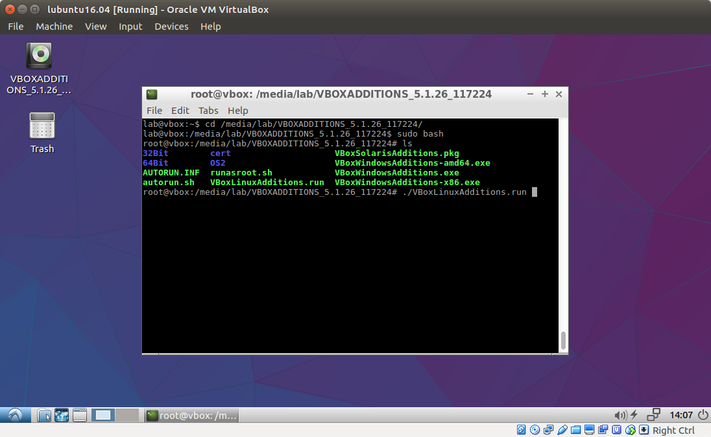

Lab assignments
Lab 1 (Due: 2/11; 2/18)Lab 2 (Due: 3/18)
Lab 3 (Due: 4/1)
Lab 4 (Due: 4/22)
Lab 5 (Due: 5/6)
Collaboration and Integrity Policy
Please read this carefully. We will run plagiarism detection software on all submitted code.
Lab Virtual Machine
We will grade your labs on an Ubuntu 16.04 machine. We recommend you do the labs in the the class virtual machine (based on Ubuntu 16.04).For a basic virtual machine setup, perform the following four steps:
- Step 1. Install VirtualBox. Download the Virtualbox virtual machine monitor 5.1.26. Choose the right binary to download according to the type of operating system running on your laptop.
- Step 2. Download class virtual machine image. Download this file. This file is fairly large (1.5GB), so you need to be patient.
- Step 3. Launch Virtualbox and import class VM image. On the Virtualbox application toolbar, under the Menu item "File", click on "Import appliance...", and choose the previously downloaded lubuntu16.04.ova file when prompted.
- Step 4. Launch Lubuntu Linux and install necessary packages. After importing, start the virtual machine named "lubuntu" and log in using the username and password given in Piazza). Once you are logged in, start a terminal once you logged in (You can find "LXterminal" under the "System tools" tab, which is expanded when you click the lower left button). Type sudo apt-get install gcc gdb make git to install GNU C compiler, make builder, gdb debugger, git source management tool
For more advanced tune-ups to help your productivity, do the following:
- Enable copy-n-paste between your native OS (e.g. MacOS) and class VM. First, click the settings button in the VirtualBox window, and then click "advanced" tab, change the pulldown button of "Shared Clipboard" and "Drag'n'Drop" to "Bidirectional".

Next, download VirtualBox Guest Additions VBoxGuestAdditions_5.1.26.iso. Launch class VM image. Under the "Devices" menu, click "Optical Drives" --> "Choose disk image...". Select the downloaded VBoxGuestAdditions_5.1.26.iso file in your download directory and click "OK".
Lastly, log in to class VM, start LXterminal, type cd /media/lab/VBOXADDITIONS_5.1.26_117224. Become root by typing sudo bash. Afterwards, type ./VBoxLinuxAdditions.run.  Restart Virtual box and re-launch class VM. Now you should be able to do copy-n-paste between native OS and class VM.
- Mount a folder in native-OS in class VM. (Note that this option requires completing the previous option which installs the virtualbox guest additions.) Instead of writing code in class VM, you may want to write code in your native-OS (e.g. using sublime) and only execute the labs in class VM. In this case, you want to store lab files in a native folder (e.g. /User/jinyang/cso18-labs) and mount the native folder in class VM, so changes made to lab files in native OS are instantly visible inside the class VM.
To mount a native folder in class VM, inside VirtualBox, click "Settings" button, and then click "Shared Folders" on the left. Click the add-share logo on the right hand side. Enter the "Folder path" in your native OS (e.g. /User/jinyang/cso18-labs and "Folder name" (e.g. cso18-labs) with "Auto-mount" selected.

Launch class VM, open LXterminal once logged in. Create mount directory by typing sudo mkdir /mnt/cso18-labs. Mount by typing sudo mount -t vboxsf -o uid=1000,gid=1000 cso18-labs /mnt/cso18-labs. From now on, the /mnt/cso18-labs directory refers to the /User/jinyang/cso18-labs directory in your native OS. If you reboot the VM, you will lose your mount. To keep it automatically mounted across reboots, add the following line (as root user) to your class VM's /etc/fstab file by typing:
sudo bash -c 'echo "cso18-labs /mnt/cso18-labs vboxsf uid=1000,gid=1000 0 0" >> /etc/fstab'
Note that if you choose to do your labs outside of the class virtual machine, we will not provide any technical support should you encounter any OS-related issues in doing the labs. Furthermore, should the results of your lab differ from what we have obtained by running the tests on Linux, we will use our test results in determining the grade.
Lab Repository Setup
For each student in the class, we have created for him/her a corresponding private lab repository on Github.com. You will submit labs by pushing to your private repo on github.com (as many times as you want) and we will collect labs for grading after the lab deadline directly from Github.com. Below are the steps for setting up your the lab environment on your laptop. If you are not familiar with the git version control system, follow the resources here to get started.
- Cloning your lab repo locally
In a VirtualBox terminal, clone your repo by typing the following:
$ git clone https://github.com/nyu-cso18spring/labs-<YourGithubUsername>.git cso18-labs $ cd cso18-labs
You will see that a directory named cso18-labs has been created under your home directory. This is the git repo for your lab assignments throughout the semester.
- Setting up the upstream repo
The lab skeleton code are kept in the repo https://github.com/nyu-cso18spring/cso18-labs managed by the course staff. Therefore, the first thing you need to do is to set up your own lab repo to track the changes made in the cso18-labs repo. In the git world, cso18-labs would be your "upstream" repo from which changes should ``flow'' into your own lab repo.
Type git remote add to add the upstream repo, and git remote -v to check that cso18-labs is indeed an upstream for your own lab repo.
$ git remote add upstream https://github.com/nyu-cso18spring/cso18-labs.git $ git remote -v origin git@github.com:nyu-cso18spring/labs-YourGithubUsername.git (fetch) origin git@github.com:nyu-cso18spring/labs-YourGithubUsername.git (push) upstream https://github.com/nyu-cso18spring/cso18-labs.git (fetch) upstream https://github.com/nyu-cso18spring/cso18-labs.git (push)
Immediately, you should check if the upstream cso18-labs repo has additional changes not present in your repo. You can check for and merge in those changes by typing:
$ git fetch upstream $ git merge upstream/master
You should perform the above two steps periodically to ensure that you've got the latest lab code. We will also remind you to fetch upstream on Piazza if we make changes/bug-fixes to the labs. - Saving changes while you are working on Labs
As you modify the skeleton files to complete the labs, you should frequently save your work to protect against laptop failures and other unforeseen troubles. You save the changes by first "committing" them to your local lab repo and then "pushing" those changes to the repo stored on github.com
$ git commit -am "saving my changes" $ git push origin
Note that whenever you add a new file, you need to manually tell git to ``track it''. Otherwise, the file will not be committed by git commit. Make git track a new file by typing:$ git add <my-new-file>
After you've pushed your changes by typing git push origin, they are safely stored on github.com. Even if your laptop catches on fire in the future, those pushed changes can still be retrieved. However, you must remember that doing git commit by itself does not save your changes on github.com (it only saves your changes locally). So, don't forget to type git push origin.
To see if your local repo is up-to-date with your origin repo on github.com and vice versa, type git status
Handin Procedure
To handin your files, simply commit and push them to github.com by doing:$ git commit -am "saving all my changes and handing in" $ git push originWe will fetch your lab files from Github.com at the specified deadline and grade them.